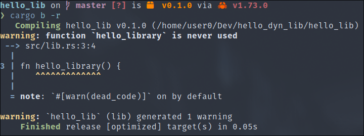
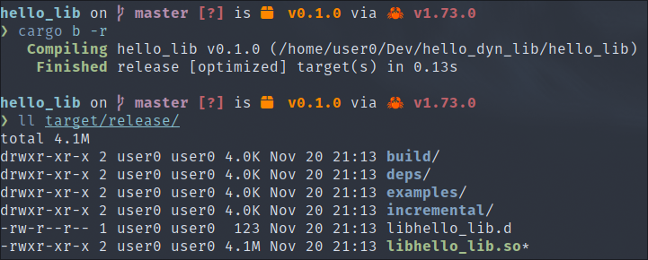
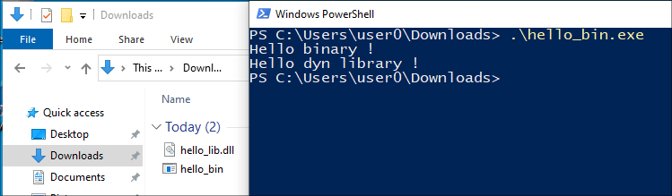

Dynamic libraries, also known as ‘Shared Objects’ on Linux or ‘DLLs’ (Dynamic Link Libraries) on Windows, provide a powerful mechanism for the organisation, reuse and interoperability of software development.
Unlike static libraries, which are linked at compile time, dynamic libraries are loaded at run time.
In the context of offensive security, dynamic libraries are often abused to exploit a system.
In this part of the course, we will learn how to compile dynamic libraries in Rust, focusing on the production of malicious libraries to usurp legitimate libraries, for example.
This involves understanding how to expose Rust functions so that they can be used by other languages, which is known as interoperability.
We'll start with the following project, which exposes a simple function that displays a string of characters:
.
├── Cargo.lock
├── Cargo.toml
└── src
└── lib.rs
Source :
pub fn hello_library() {
println!("Hello library !");
}
When compiled, the result is as follows:

We can see that the compiler simply generates a sort of archive, which is normally used afterwards to link it statically to the program that uses the library in question.
This is not a dynamic library, so we need to add the following section to our ‘Cargo.toml’ file to tell Cargo to generate a dynamic library:
# Cargo.toml
...
[lib]
crate-type = ["dylib"]
...
Then when you recompile, you get a dynamic :

Now, there's one more major concern, and that's the ABI.
The ABI is a set of rules and conventions that dictate how functions, data structures and system calls should be defined in binary format in machine code. A bit like an API, but for binaries.
The problem is that the ABI of the C language, the most commonly used, and that of the Rust language, are not the same. Reluctantly, we're going to have to adapt our project so that it uses the ABI of the most common language to increase our attack surface.
Firstly, we need to tell Cargo to use the C :
# Cargo.toml
...
[lib]
crate-type = ["cdylib"] # instead of "dylib"
...
Then he also has to make changes to the source code:
// src/lib.rs
#[no_mangle]
pub extern "C" fn hello_library() {
println!("Hello dyn library !");
}
The addition of the ‘#[no_mangle]’ is necessary to prevent the compiler from modifying the final name of the function.
In our example, there aren't many difficulties as there are no input arguments or return values, but if there were, we couldn't simply return Rust types, but C types.
Fortunately for us, they are available in the standard library in the ‘std::os::*’ path.
Now we finally have a dynamic library that can be called by C programs. Note that the steps we've just produced also work on Windows.
We're now going to develop another binary to test our dynamic library, and at the same time show how to run dynamic libraries compiled with the C ABI, in our Rust program.
Here is the source code:
.
├── Cargo.lock
├── Cargo.toml
└── src
└── main.rs
// src/main.rs
use libloading::{Library, Symbol};
fn main() {
println!("Hello binary !");
unsafe {
let lib = Library::new("hello_lib.dll").expect("error loading lib");
let func = lib
.get::<Symbol<extern "C" fn()>>(b"hello_library")
.unwrap();
func();
}
}
Here, we use the ‘libloading’ dependency, which loads our dynamic library from our current directory, then we import the function using its name ‘hello_library’ and finally we execute it.
We successfully observe the result at runtime:

This example works equally well on a Linux system.
We now have all the tools we need to develop malware in the form of a dynamic library, which could be useful when we want to exploit attacks such as ‘Side-Loading DLL’ or ‘Phantom DLL’ or simply code injection in general.